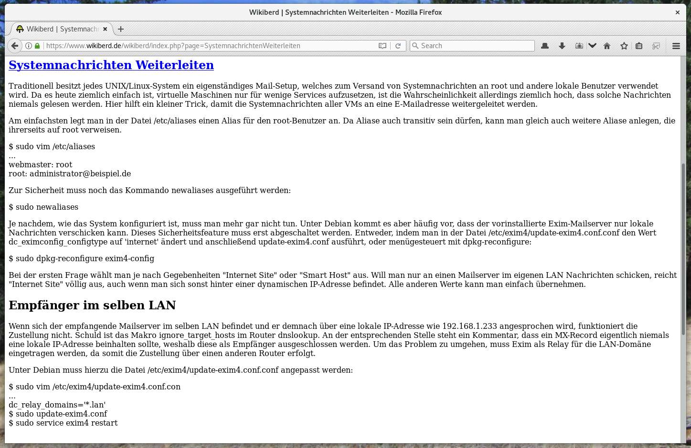
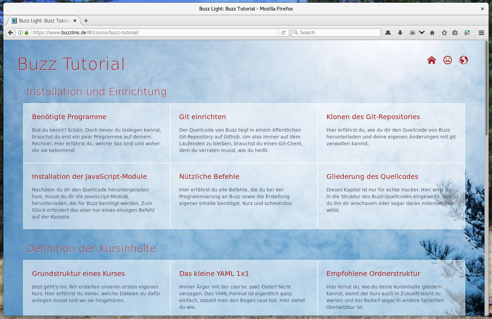
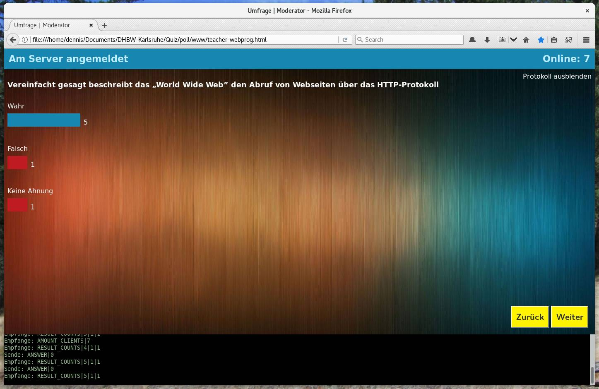
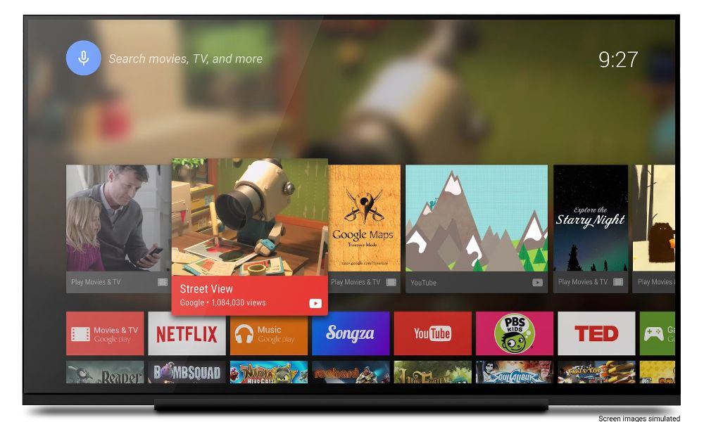

 Einfache Textdokumente  Komplexe Webseiten Browser Games  Browser Apps  Smart TV Apps Bildnachweis: Android Developer Reference Mobile Apps Bildnachweis: Pixabay: FirmBee
HTML (HyperText Markup Language) Auszeichnungssprache zur Definition der darzustellenden Inhalte Beschreibt nur den Inhalt und seine Bedeutung, nicht aber das Aussehen Überschriften, Absätze, Aufzählungen, Tabellen, Bilder, … CSS (Cascading StyleSheets) Sprache zur Definition der Layout- und Darstellungsoptionen einer HTML-Seite Bezieht sich auf die Inhalte eines HTML-Dokuments und legt ihre Darstellung fest Farben, Hintergründe, Umrandungen, Positionierung, Transparenz, Schatten, … SVG (Scalable Vector Graphics) XML-basiertes Grafikformat für skalierbare Vektorgrafiken Kann mit CSS und JavaScript umfangreich zur Laufzeit angepasst werden Ist daher gut zur Definition interaktiver, grafischer Elemente geeignet Rechtecke, Kreise, Linien, Kurven, Flächen, Füllungen, … JavaScript Programmiersprache, die innerhalb des Browsers ausgeführt wird Ermöglicht es, auf Ereignisse wie Mausklicks zu reagieren Ermöglicht die nachträgliche Veränderung der sichtbaren Seiteninhalte Bietet ein umfangreiches API zur App-Entwicklung
Creative Commons Namensnennung 4.0 International Beliebiges Teilen ist erlaubt Die Unterlagen dürfen bearbeitet und verändert werden Wenn die Namens- und Urheberangaben erhalten bleiben Und keine weiteren Einschränkungen auferlegt werden §
 Browser Games
Browser Games